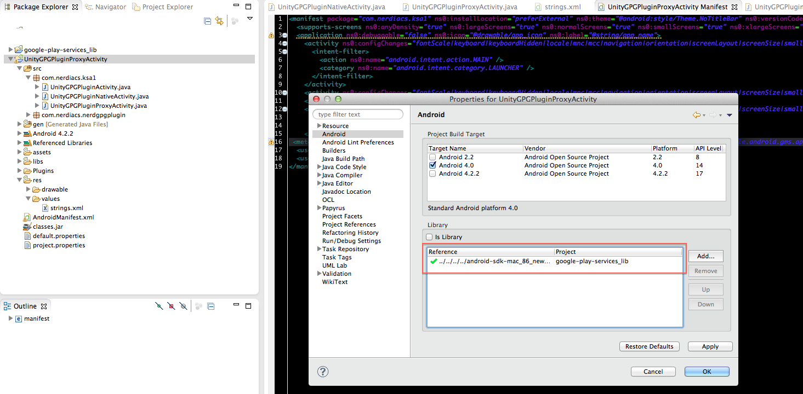
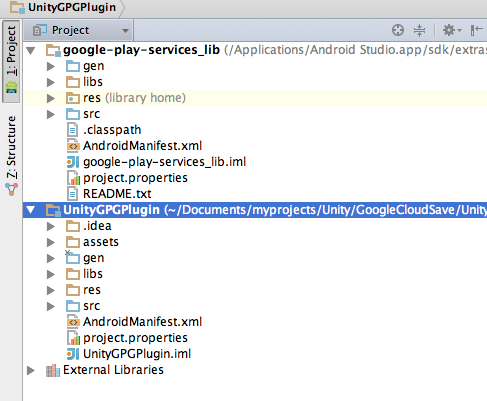
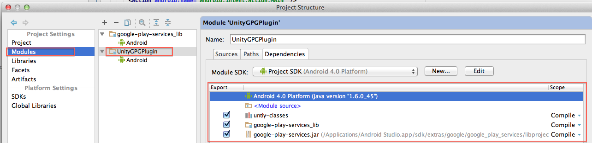

UnityGPGPlugin
Unity3D Google Play Game Services Plugin
Copyright (C) 2011 Nerdiacs Pte Limited http://www.Nerdiacs.com
This library is free software; you can redistribute it and/or modify it under the terms of the GNU Lesser General Public License as published by the Free Software Foundation; either version 3.0 of the License, or (at your option) any later version.
This library is distributed in the hope that it will be useful, but WITHOUT ANY WARRANTY; without even the implied warranty of MERCHANTABILITY or FITNESS FOR A PARTICULAR PURPOSE. See the GNU Lesser General Public License for more details.
You should have received a copy of the GNU Lesser General Public License along with this library; if not, write to the Free Software Foundation, Inc., 51 Franklin Street, Fifth Floor, Boston, MA 02110-1301 USA
Features
- Support iOS and Android
- Google Cloud Save
- Leaderboards
- Achievements
- Signin
Usage for iOS
- Read the iOS SDK docs to understand how all fits in. https://developers.google.com/games/services/ios/quickstart
- On first usage, run bootstrap.sh to download the necessary SDKs. If newer SDKs are available than the one in bootstrap then download those and rename paths in Assets/Editor/googleplay_xcode.py.
- Setup GooglePlayAppID and bundleId of your app/game in googleplay_xcode.
- To test the sample App, in GCGui.cs file setup clientId from googleplay and rest of leaderboardip.
- Run and build app on ipad. click on Init GPG before doing anything else. Try silentSignin and if it fails it will display SignIn button. Use that to do proper auto with switching.
Trouble Shooting
Signin doesn't work
The plugin expects google chrome in application:openUrl part. Change code there to allow any type of browser. Make sure bundled, gpgappid etc are all setup properly in both project and google dev console web guy.
Xcode Project Corrupted
There is PostBuildProcess script that adds frameworks and configures the overall project. Try removing that and add frameworks/bundles yourself using googleplay docs Use the quickstart guide link https://developers.google.com/games/services/ios/quickstart for more information
Conflicts with other plugins
- If there is another PostBuildProcess from another plugin (facebook etc) then chain script from this one so that it runs as well.
- The postbuildprocess patches AppController.m file by adding handler for google signin
(BOOL)application:(UIApplication *)application
openURL:(NSURL *)url
sourceApplication:(NSString *)sourceApplication
annotation:(id)annotation
This might conflict with facebook and you would need to remove the patch from PostBuildProcess and add this code manually each time project is generated. You coud also make a combined patch for google and other plugins.
Usage for Android
Building with Eclipse for Unity version 4.0 or earlier
- Setup SDK google play sdk as per instructions for Eclipse. Do not update ADT to version 2.2 but keep it upto 2.1. This is because at the time of writing this readme Unity is unable to create eclipse projects with ADT 2.2 http://developer.android.com/google/play-services/setup.html
- Replace YOUR_GOOGLEPLAY_APPID in googleplay_eclipse.py with your APPID from GooglePlay Console. Hint: It is a 12 digit number.
- In Unity Build settings select export project to eclipse and build.
- In Eclipse refresh the project in case it was already open.
- Add google_play_services_lib to the project as library in Android settings.  The code after this should compile fine.
Building with Android Studio for Unity version 4.2 or later
- Setup Android Google Play Game Servies SDK from Tools/Android support plugins.
- The PostBuild script at the time of writing this doc doesn't work with Android Studio. Hence you have to manually modify manifest file and strings.xml file as per section Troubleshooting
- Export Android Studio project from Unity and import it into Android Studio. This is simple process.
- Add google gameplay services jar file to libraries of your Module.

- Add google gameplay services directory from extra's folder of SDK as module to project. 
- Make Google gameplay services jar and module as dependency for your module. In our case it is UnityGPGPlugin sample.  The code after this should compile fine and allow normal functionality.
Troubleshooting
*AndroidManifest.xml and strings.xml (in res) directories are modified by PostBuildProcess.
-
Check if AndroidManifest.xml has following entries inside application tag
<meta-data ns0:name="com.google.android.gms.games.APP_ID" ns0:value="@string/app_id" /> <meta-data ns0:name="com.google.android.gms.appstate.APP_ID" ns0:value="@string/app_id" /> <activity ns0:label="@string/app_name" ns0:name="com.nerdiacs.nerdgpgplugin.DummyActivity" />
-
Check if strings.xml has correct googleplay appid with following tag in resources
<string name="app_id">YOURAPP_ID</string>
In case you get issues, try to compile and run one googleplay services sample CollectAllStars. It will explain how project needs to be setup.
Known Issues
- Conflict resolution for both iOS and Android is very basic. It automatically selects localData as resolvedData and overrides whatever is received from cloud. Best way is to always load data at start of app before trying to store. This would sync the data properly.
- 512k of mem is always allocated for clouddata in Mono (iOS) and Java (Android). It will be changed once I figure out a better way to pass around byte arrays in java.
TODO
- Add support for multiplayer matchmaking
- Add support for sharing on google+